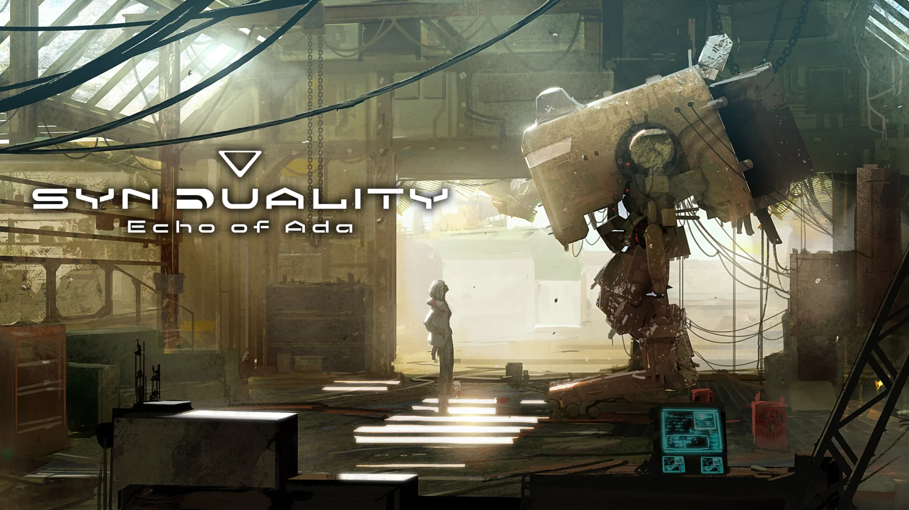

Pour la fin d'année PlayStation à mit 5 jeux au lieux de 3 ! Voici tous les jeux du PS+ :

écho de syndualité d'Ada
Synduality Echo of Ada se déroule dans le future en 2222 pour être plus précis. Après qu'une pluie toxique ait anéanti pratiquement toute la population et a donné vie a des créatures étranges
Les humains qui ont survécu sont contraint de construire un havre souterrain pour survivre. Réalisez des quêtes pour avancer dans la construction du havres tout en affrontant des xénomorphes.
Les jeux du Playstation+ de décembre
Neon White ce joue a la première personne le but est d'exterminer des démons au Paradis. Vous incarnez White un chasseur de démons, collectez des cartes d'âme pour attaquer les ennemis
et utiliser leur capacité.